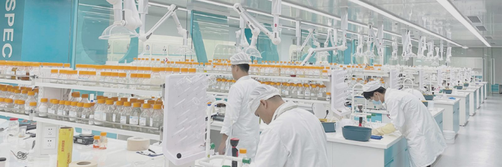

6 Pemahaman Amy Skin Nov 2026
Bagaimana cara kerja sampel sebelum produksi besar - besaran?
Anda menyetujui sampel sebelum produksi massal dimulai. Kirim brief Anda, terima sampel formula, uji, beri umpan balik, dan formula disesuaikan bila perlu. Hanya sampel yang Anda konfirmasi yang masuk ke produksi massal — pada MOQ 500–1,000 unit per SKU.

Apa saja langkah - langkah contohnya?
Brief
Arah Formula, jenis produk, ide pak, kuantitas, pasar target.
Contoh
Tim pabrik membuat sampel dari formula yang siap atau formula khusus.
Umpan balik
Anda menguji sampel dan mengatakan apa yang harus menjaga atau mengubah tekstur, aroma, merasa.
Atur
Formulanya disesuaikan jika diperlukan, dan Anda periksa sampel baru.
Konfirmasi
Kau menyetujui sampelnya, barulah produksi besar-besaran dimulai.
Berapa biaya sampel, dan berapa lama waktu yang dibutuhkan?
Biaya sampel, waktu tunggu sampel, dan jumlah revisi dikonfirmasi per pesanan — angka tersebut tidak dipublikasikan sebagai angka tetap di situs ini, karena bergantung pada formula dan perubahan yang Anda minta. Mintalah angka tersebut bersama brief Anda melalui WhatsApp atau oleh email ke info@amyskinoem.com, dan mereka akan dikonfirmasi sebelum sampling dimulai.
Apa yang harus Anda periksa dalam sampel?
- Tekstur dan rasa pada kulit apa yang cocok dengan cerita yang ingin Anda ceritakan?
- Bau apa yang cocok untuk merek Anda?
- Kemas yang pas, apa formulanya bekerja di botol, botol atau tabung yang Anda pilih?
- Label dan klaim mereka sesuai dengan pasar Anda?
Apa yang terjadi setelah Anda mengkonfirmasi?
Setelah Anda menyetujui sampel, pilot, produksi massal dan QC mengikuti langkah 3 sampai 5 6-step OEM / ODM proses Dan kemasan dan pengiriman adalah langkah 6 Tidak ada yang pergi untuk massal sebelum Anda menyetujuinya.
Dapatkan Penawaran Whats Appus Kita
Selanjutnya: Apa MOQ 500–1,000 benar-benar berarti → · Semua wawasan →